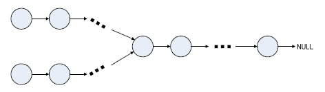

链表问题集锦
原文出处：链表问题集锦
链表问题在面试过程中也是很重要也很基础的一部分，链表本身很灵活，很考查编程功底，所以是很值得考的地方。我将复习过程中觉得比较好的链表问题整理了下。
下面是本文所要用到链表节点的定义：
struct Node{
int data;
Node* next;
};
1. 在O(1)时间删除链表节点
题目描述：给定链表的头指针和一个节点指针，在O(1)时间删除该节点。[Google面试题]
分析：本题与《编程之美》上的「从无头单链表中删除节点」类似。主要思想都是「狸猫换太子」，即用下一个节点数据覆盖要删除的节点，然后删除下一个节点。但是如果节点是尾节点时，该方法就行不通了。
代码如下：
//O(1)时间删除链表节点，从无头单链表中删除节点
void deleteRandomNode(Node *cur)
{
assert(cur != NULL);
assert(cur->next != NULL); //不能是尾节点
Node* pNext = cur->next;
cur->data = pNext->data;
cur->next = pNext->next;
delete pNext;
}
2. 单链表的转置
题目描述：输入一个单向链表，输出逆序反转后的链表
分析：链表的转置是一个很常见、很基础的数据结构题了，非递归的算法很简单，用三个临时指针 pre、head、next 在链表上循环一遍即可。递归算法也是比较简单的，但是如果思路不清晰估计一时半会儿也写不出来吧。
下面是循环版本和递归版本的链表转置代码：
//单链表的转置,循环方法
Node* reverseByLoop(Node *head)
{
if(head == NULL || head->next == NULL)
return head;
Node *pre = NULL;
Node *next = NULL;
while(head != NULL)
{
next = head->next;
head->next = pre;
pre = head;
head = next;
}
return pre;
}
//单链表的转置,递归方法
Node* reverseByRecursion(Node *head)
{
//第一个条件是判断异常，第二个条件是结束判断
if(head == NULL || head->next == NULL)
return head;
Node *newHead = reverseByRecursion(head->next);
head->next->next = head;
head->next = NULL;
return newHead; //返回新链表的头指针
}
3. 求链表倒数第k个节点
题目描述：输入一个单向链表，输出该链表中倒数第k个节点，链表的倒数第0个节点为链表的尾指针。
分析：设置两个指针 p1、p2，首先 p1 和 p2 都指向 head，然后 p2 向前走 k 步，这样 p1 和 p2 之间就间隔 k 个节点，最后 p1 和 p2 同时向前移动，直至 p2 走到链表末尾。
代码如下：
//倒数第k个节点
Node* theKthNode(Node *head,int k)
{
if(k < 0) return NULL; //异常判断
Node *slow,*fast;
slow = fast = head;
int i = k;
for(;i>0 && fast!=NULL;i--)
{
fast = fast->next;
}
if(i > 0) return NULL; //考虑k大于链表长度的case
while(fast != NULL)
{
slow = slow->next;
fast = fast->next;
}
return slow;
}
4. 求链表的中间节点
题目描述：求链表的中间节点，如果链表的长度为偶数，返回中间两个节点的任意一个，若为奇数，则返回中间节点。
分析：此题的解决思路和第3题「求链表的倒数第 k 个节点」很相似。可以先求链表的长度，然后计算出中间节点所在链表顺序的位置。但是如果要求只能扫描一遍链表，如何解决呢？最高效的解法和第3题一样，通过两个指针来完成。用两个指针从链表头节点开始，一个指针每次向后移动两步，一个每次移动一步，直到快指针移到到尾节点，那么慢指针即是所求。
代码如下：
//求链表的中间节点
Node* theMiddleNode(Node *head)
{
if(head == NULL)
return NULL;
Node *slow,*fast;
slow = fast = head;
//如果要求在链表长度为偶数的情况下，返回中间两个节点的第一个，可以用下面的循环条件
//while(fast && fast->next != NULL && fast->next->next != NULL)
while(fast != NULL && fast->next != NULL)
{
fast = fast->next->next;
slow = slow->next;
}
return slow;
}
5. 判断单链表是否存在环
题目描述：输入一个单向链表，判断链表是否有环？
分析：通过两个指针，分别从链表的头节点出发，一个每次向后移动一步，另一个移动两步，两个指针移动速度不一样，如果存在环，那么两个指针一定会在环里相遇。
代码如下：
//判断单链表是否存在环,参数circleNode是环内节点，后面的题目会用到
bool hasCircle(Node *head,Node *&circleNode)
{
Node *slow,*fast;
slow = fast = head;
while(fast != NULL && fast->next != NULL)
{
fast = fast->next->next;
slow = slow->next;
if(fast == slow)
{
circleNode = fast;
return true;
}
}
return false;
}
6. 找到环的入口点
题目描述：输入一个单向链表，判断链表是否有环。如果链表存在环，如何找到环的入口点？
解题思路： 由上题可知，按照 p2 每次两步，p1 每次一步的方式走，发现 p2 和 p1 重合，确定了单向链表有环路了。接下来，让p2回到链表的头部，重新走，每次步长不是走2了，而是走1，那么当 p1 和 p2 再次相遇的时候，就是环路的入口了。
为什么？：假定起点到环入口点的距离为 a，p1 和 p2 的相交点M与环入口点的距离为b，环路的周长为L，当 p1 和 p2 第一次相遇的时候，假定 p1 走了 n 步。那么有：
p1走的路径： a+b ＝ n；
p2走的路径： a+b+k*L = 2*n； p2 比 p1 多走了k圈环路，总路程是p1的2倍
根据上述公式可以得到 k*L=a+b=n显然，如果从相遇点M开始，p1 再走 n
步的话，还可以再回到相遇点，同时p2从头开始走的话，经过n步，也会达到相遇点M。
显然在这个步骤当中 p1 和 p2 只有前 a 步走的路径不同，所以当 p1 和 p2 再次重合的时候，必然是在链表的环路入口点上。
代码如下：
//找到环的入口点
Node* findLoopPort(Node *head)
{
//如果head为空，或者为单结点，则不存在环
if(head == NULL || head->next == NULL) return NULL;
Node *slow,*fast;
slow = fast = head;
//先判断是否存在环
while(fast != NULL && fast->next != NULL)
{
fast = fast->next->next;
slow = slow->next;
if(fast == slow)
break;
}
if(fast != slow) return NULL; //不存在环
fast = head; //快指针从头开始走，步长变为1
while(fast != slow) //两者相遇即为入口点
{
fast = fast->next;
slow = slow->next;
}
return fast;
}
7. 编程判断两个链表是否相交
题目描述：给出两个单向链表的头指针（如下图所示），

比如h1、h2，判断这两个链表是否相交。这里为了简化问题，我们假设两个链表均不带环。
解题思路：
直接循环判断第一个链表的每个节点是否在第二个链表中。但，这种方法的时间复杂度为O(Length(h1) * Length(h2))。显然，我们得找到一种更为有效的方法，至少不能是O（N^2）的复杂度。
针对第一个链表直接构造hash表，然后查询hash表，判断第二个链表的每个节点是否在hash表出现，如果所有的第二个链表的节点都能在hash表中找到，即说明第二个链表与第一个链表有相同的节点。时间复杂度为为线性：O(Length(h1) + Length(h2))，同时为了存储第一个链表的所有节点，空间复杂度为O(Length(h1))。是否还有更好的方法呢，既能够以线性时间复杂度解决问题，又能减少存储空间？
转换为环的问题。把第二个链表接在第一个链表后面，如果得到的链表有环，则说明两个链表相交。如何判断有环的问题上面已经讨论过了，但这里有更简单的方法。因为如果有环，则第二个链表的表头一定也在环上，即第二个链表会构成一个循环链表，我们只需要遍历第二个链表，看是否会回到起始点就可以判断出来。这个方法的时间复杂度是线性的，空间是常熟。
进一步考虑“如果两个没有环的链表相交于某一节点，那么在这个节点之后的所有节点都是两个链表共有的”这个特点，我们可以知道，如果它们相交，则最后一个节点一定是共有的。而我们很容易能得到链表的最后一个节点，所以这成了我们简化解法的一个主要突破口。那么，我们只要判断两个链表的尾指针是否相等。相等，则链表相交；否则，链表不相交。
所以，先遍历第一个链表，记住最后一个节点。然后遍历第二个链表，到最后一个节点时和第一个链表的最后一个节点做比较，如果相同，则相交，否则，不相交。这样我们就得 到了一个时间复杂度，它为O((Length(h1) + Length(h2))，而且只用了一个额外的指针来存储最后一个节点。这个方法时间复杂度为线性O(N)，空间复杂度为O(1)，显然比解法三更胜一筹。
解法四的代码如下：
//判断两个链表是否相交
bool isIntersect(Node *h1,Node *h2)
{
if(h1 == NULL || h2 == NULL) return false; //异常判断
while(h1->next != NULL)
{
h1 = h1->next;
}
while(h2->next != NULL)
{
h2 = h2->next;
}
if(h1 == h2) return true; //尾节点是否相同
else return false;
}
8. 扩展：链表有环，如何判断相交
题目描述：上面的问题都是针对链表无环的，那么如果现在，链表是有环的呢?上面的方法还同样有效么?
分析：如果有环且两个链表相交，则两个链表都有共同一个环，即环上的任意一个节点都存在于两个链表上。因此，就可以判断一链表上俩指针相遇的那个节点，在不在另一条链表上。
代码如下：
//判断两个带环链表是否相交
bool isIntersectWithLoop(Node *h1,Node *h2)
{
Node *circleNode1,*circleNode2;
if(!hasCircle(h1,circleNode1)) //判断链表带不带环，并保存环内节点
return false; //不带环，异常退出
if(!hasCircle(h2,circleNode2))
return false;
Node *temp = circleNode2->next;
while(temp != circleNode2)
{
if(temp == circleNode1)
return true;
temp = temp->next;
}
return false;
}
9. 扩展：两链表相交的第一个公共节点
题目描述：如果两个无环单链表相交，怎么求出他们相交的第一个节点呢？
分析：采用对齐的思想。计算两个链表的长度 L1 , L2，分别用两个指针 p1 , p2 指向两个链表的头，然后将较长链表的 p1（假设为 p1）向后移动L2 - L1个节点，然后再同时向后移动p1 , p2，直到 p1 = p2。相遇的点就是相交的第一个节点。
代码如下：
//求两链表相交的第一个公共节点
Node* findIntersectNode(Node *h1,Node *h2)
{
int len1 = listLength(h1); //求链表长度
int len2 = listLength(h2);
//对齐两个链表
if(len1 > len2)
{
for(int i=0;i<len1-len2;i++)
h1=h1->next;
}
else
{
for(int i=0;i<len2-len1;i++)
h2=h2->next;
}
while(h1 != NULL)
{
if(h1 == h2)
return h1;
h1 = h1->next;
h2 = h2->next;
}
return NULL;
}
10. 总结
可以发现，在链表的问题中，通过两个的指针来提高效率是很值得考虑的一个解决方案，所以一定要记住这种解题思路。记住几种典型的链表问题解决方案，很多类似的题目都可 以转换到熟悉的问题再解决。